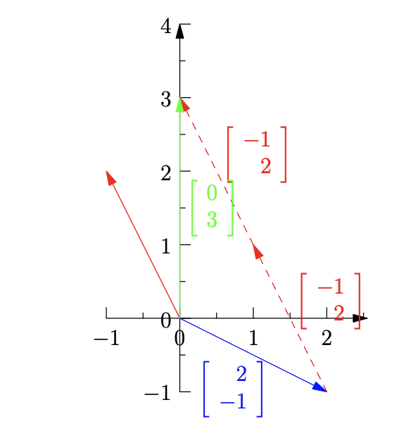

Unit I
Unit 1 of MIT 18.06SC Linear Algebra
Table of Contents
- The Geometry of Linear Equations
- An Overview of Key Ideas
- Elimination with Matrices
- Multiplication and Inverse Matrices
- Factorization into A=LU
The Geometry of Linear Equations
The lecture overview and resources can be found here. The lecture summary can be found here.
Objectives
- n linear equations, n unknowns
- Row picture
- Column picture
- Matrix form
Lecture
Take $2x-y=0, -x+2y=3$, its matrix form with its coefficients would be
Let the first matrix be $A$, the vector of unknown be $X$, while the right hand side vector be $b$. Sometimes $b$ will be referred to as the “right hand side” vector.
-
The “Row Picture”: Imagine plotting the two equations (which are represented by the rows of the matrices) in a cartesian coordinate plane; their intersection would be the solution to the system. In the above example, the solution to the system would be $x=1, y=2$.
-
The “Column Picture”: We can interpret the matrices above as
-
The above equation is essentially telling us to find the “right” linear combination of the first and second vector which produces the resulting vector. We want to find the right $x$ and $y$ which “make” the two vectors combine together to get the third vector.
-
We can imagine projecting the first two vectors into a Cartesian coordinate plane. Since we know the correct solution to the system, we can imagine taking “one” of the first vector, then at the tip of the vector, “tucking” two of the second vector on top of it. The end result will be the third vector.

- Now, moving on to three equations, $2x-y+0z=0, -x+2y-z=-1, 0x-3y+4z=4$. Remember the matrix form, which gives us a “row picture”:
- Using the “row picture”, instead of two lines intersecting, it will be three planes intersecting, and they meet at one point, which is the solution to the system. The “row picture” gets more complicated and harder for us humans to see as the number of equations increases.
- Using the “column picture”, we can rewrite the system as
- We’re finding a linear combination of the first three vectors, which produces the final fourth vector.
- We can visualize this as vectors in a 3-dimensional space. We need to find the “right” combination of the three vectors which produce the fourth vector. As we can easily see here through the “column picture”, $x=0, y=0, z=1$ would be the solution to the system.
The Big Picture
In the column picture, we’re essentially “stacking” vectors on top of each other, producing a linear combination that results in the “right-hand side” vector.
- Can I solve $Ax=b$ for every $b$ ?
- Or, do the linear combinations of the columns fill the entire 3-D space?
- For the above matrix and columns, the answer is YES.
- It’s a non singular matrix, an invertible matrix.
- If the three columns of the $A$ matrix lie in the same plane, the linear combination of the three vectors would still be in that plane. So the answer to the above question for this case would be NO.
Multiplying a matrix by a vector,
think of it as taking “1” of the first column and “2” of the second column and adding them together.
Thinking from the row perspective, you would take the first row of the first matrix, multiply it by the column vector, then take the second row and multiply it by the column vector. (Dot product)
Key Takeaway$Ax$ is a combination of the columns of $A$.
An Overview of Key Ideas
The lecture overview and resources can be found here. The lecture summary can be found here.
Objectives
- Vectors
- Matrices
Lecture
Vectors $u, v, w$, their linear combination could be $x_{1}u + x_{2}v + x_{3}w = b$.
Suppose all the possible linear combinations of $u$ and $v$ are taken…you get a plane.
Let
Now let
We can see that
When you look at the solution that we found, it can be seen as a matrix multiplying $b$ and the matrix will be
This matrix is called the inverse of $A$, denoted as $A^{-1}$.
Observe the relationship $Ax=b$, thus $x=A^{-1}b$.
From the example above, we can call the matrix $A$ as a difference matrix since it takes the differences of the values of $x$. Its inverse, $A^{-1}$, would then take sums.
Instead of $A$, Let
then
We see that
Which means $C$ has no inverse, there’s no linear transformation that can transform a vector of zeros back to some other non zero vector.
Geometrically, the three vectors that the three columns of $C$ represents lay on the same plane. The linear combinations of $u, v, w$, is a plane. They are dependent vectors while the original $u, v, w$ vectors are independent vectors as all of their possible linear combinations fills the whole space.
Elimination with Matrices
The lecture overview and resources can be found here. The lecture summary can be found here.
Objectives
- Elimination with Matrices (and cases when it fails)
- Back Substitution
- Matrix Multiplication
Lecture
Consider the system of equations:
where
Elimination
Arrange the system into a matrix by concatenating $A$ and $b$. Let the number in the top left corner be the “pivot”. We can multiply the first row by 3 and subtract it from the second row to obtain
Notice that the “pivot” row does not change. We “eliminated” the element in the second row, first column, element (2, 1). We then eliminate (3, 1), which is already 0.
We then set the (2, 2) element as the pivot and attempt to eliminate the (3, 2) element, which results in
WarningZero cannot be the “pivot” element! If possible, swap rows to allow a nonzero “pivot”.
If a zero happens to be a “pivot” element and there’s no rows to swap with, we encounter failure. This also indicates that the matrix is non-invertible.
After elimination, the system then becomes
Using back substitution, the solution to the system can be determined as $z=2, y=1, z=-2$.
Elimination with Matrices
-
A matrix times a column is a column, a row times a matrix is a row.
-
Multiplying a row vector by a matrix is a linear combination of the rows in the matrix using the values of the vector.
An identity matrix does nothing when multiplied by a matrix.
Recall
The first step of the elimination can be represented by the following matrix operation
which is effectively “constructing” the second row of the resulting matrix as 3 times the first row subtracted from the second row then added with 0 times the third row.
Multiplication and Inverse Matrices
Factorization into A=LU
This line appears after every note.
Lost? Go back to the homepage?
Notes mentioning this note
There are no notes linking to this note.